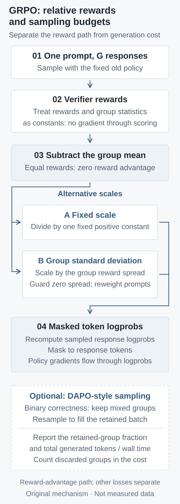

Finite-group baseline derivations and exact Bernoulli enumeration separate mean subtraction, standard-deviation scaling, and dynamic sampling, connecting gradient signals to generation budgets.
Generate several answers to one question, subtract their mean reward, and divide by their reward standard deviation. GRPO's advantage estimator resembles a routine standardization step. Yet it determines which responses drive an update, the relative contributions of questions, and how much of a generation batch supplies a relative reward signal. Treating it only as numerical stabilization misses the connection between the update and its sampling budget.
This article revisits three foundational reports: DeepSeekMath, first submitted on February 5, 2024; Understanding R1-Zero-Like Training: A Critical Perspective (Dr. GRPO, COLM 2025), first submitted on March 26, 2025; and DAPO, first submitted on March 18, 2025. These are not new releases today. An exactly enumerable example separates mean subtraction, standard-deviation scaling, and filtering groups without variation, before reconnecting them to token masks and generation costs.
1. Specify the gradient being estimated
Fix a question \(q\) and independently draw \(G\ge2\) complete responses from the current policy. The reward function has no direct dependence on policy parameters. Assume fixed distribution support and conditions that permit exchanging differentiation and expectation. With response length \(T_i\), the sequence score is the sum of log-probability gradients over response tokens:
The identities below concern the reward term with on-policy sampling and differentiation at the same parameter value. They exclude KL, entropy bonuses, PPO clipping, and multiple updates on old responses. Rewards and advantages are held fixed during differentiation. These restrictions isolate normalization rather than labeling an entire GRPO trainer an unbiased estimator.
Outcome-supervised DeepSeekMath assigns the same group-standardized reward to every token of a response. Its full objective also contains length reduction, clipped probability ratios, and KL. We remove those components first and reconnect them to the implementation later.
2. Subtracting the group mean leaves a finite-group factor
Write \(\bar r=G^{-1}\sum_jr_j\). A common intuition is that subtracting a baseline preserves the expected gradient. This baseline, however, includes the response's own reward. Cross terms from independent other responses vanish in expectation; the self term does not:
If every question uses the same fixed \(G\), this is one positive global scaling and does not by itself rotate the expected gradient. It is nevertheless not exactly the original gradient. Varying group sizes cannot be summarized by one shared factor. Even with a fixed factor, Adam's numerical stabilizer, gradient clipping, and the relative weights of other losses prevent a general claim of exact equivalence after changing the learning rate.
Strict unbiasedness under the stated assumptions can be recovered with a leave-one-out baseline: subtract the mean reward of the other responses.
This is not a prescription to replace every trainer with leave-one-out estimation. It distinguishes alignment with the original expected gradient from equality to it. Dr. GRPO discusses removing reward-standard-deviation and response-length weighting. A finite group mean that still includes the current sample retains the factor derived here. The paper's term “unbiased” should especially not be extended to the complete clipped training process.
3. A random standard deviation is not a constant
For an auditable calculation, use the population variance within the sampled group, placing the stabilizer outside the square root:
When \(\delta=0\) and every reward is identical, explicitly set advantages to zero to avoid zero divided by zero. A positive stabilizer prevents division by zero but cannot create reward differences. This zero statement concerns only the centered reward-advantage term; KL, entropy, and optimizer state can still produce parameter changes.
The denominator, numerator, and score share samples and are correlated. The sampled standard deviation cannot simply be replaced by its population value. Consider an original one-token teaching model: \(a_i\sim\operatorname{Bernoulli}(p)\), \(p=\sigma(z)\), reward \(r_i=a_i\), and hence \(\partial_z\log\pi(a_i)=a_i-p\). This is not a complete description of correctness in a real language model. Let \(K\) count successes and \(f=K/G\) be their fraction. Direct multiplication gives:
The true gradient is \(p(1-p)\); the centered expectation is \(1-1/G\) times that gradient. The standardized expectation instead requires summing over all possible success counts:
This finite sum is generally not the original gradient times a question-independent constant. When questions have different gradient directions, changing their relative contributions can change the aggregate direction. It is therefore not universally a learning-rate adjustment. Nor is a stopped normalization coefficient the full derivative of an objective described as “expected standardized reward.”
Boundary cases matter. For \(G=2\), the expression equals \(p(1-p)\) exactly, so not every group size induces the same difficulty reweighting. At fixed finite \(G\), most groups still lack variation as \(p\) approaches 0 or 1. With exactly one success, the successful response has standardized advantage \(\sqrt{G-1}\), while the others have \(-1/\sqrt{G-1}\). These are finite at fixed \(G\); low population success probability does not make them diverge.
The standard-deviation convention must also be stated. Sample standard deviation divides by \(G-1\). With zero stabilizer, it multiplies this example's standardized estimator by \(\sqrt{(G-1)/G}\); with a nonzero stabilizer, that fixed conversion generally fails. Our reward is 0/1, whereas DAPO's base correctness reward is −1/+1. Positive affine reward transformations cancel under standardization without a stabilizer, but a fixed positive stabilizer breaks exact scale invariance.

Original mechanism schematic, not experimental data. The scaling branches are alternatives. Only the reward-advantage path is shown, not complete GRPO, Dr. GRPO, or DAPO. Optional filtering and normalization are separate switches.
DAPO's dynamic sampling filters all-correct and all-incorrect groups in its binary-correctness setting, continuing generation to fill an effective training batch. Start with a narrower calculation: keep one question and policy fixed, independently retry groups of fixed size until a group contains both success and failure. Its retention probability is:
\[\alpha(p)=\Pr(0<K<G)=1-p^G-(1-p)^G.\]
With no retry cap and positive retention probability, expected groups and responses per retained group are:
These count responses, not tokens or elapsed time. The centered, leave-one-out, and standardized estimators in our example vanish on rejected groups, so their conditional expectation obeys:
A stronger average signal per retained group is compatible with more generation to find that group. Filtering does not automatically increase the single-draw \(p\). If \(p=0\) or \(p=1\), retention has probability zero, and unlimited retries cannot produce a valid group. Raw REINFORCE without mean subtraction does not satisfy the zero-contribution premise: an all-success group still contributes a reward gradient, so the division by retention probability cannot be copied to it.
Now distinguish sampling across questions. If each attempt independently redraws a question from \(d(q)\), then draws its response group, the retained-question distribution becomes:
A changed distribution does not automatically establish an additional gradient-direction bias. With zero estimators on rejected groups, fixed group size, and equally weighted retained groups, the changed question frequency and the larger conditional gradient exactly cancel:
This is a global scaling result for idealized rejection sampling, not an equivalence proof for complete DAPO. Retrying each question separately, random token-reduction denominators, length rewards, clipping, correlated draws, finite buffers, and policy updates can change the conditions. The actual verl DAPO recipe also configures the filtering metric and maximum generation batches. Before discussing update direction, identify which random variable the implementation redraws.
5. Reconnect the equations to tensors, masks, and conventions
A minimal layout has rewards of shape \(B\times G\), where \(B\) counts questions, and response log probabilities and masks of shape \(B\times G\times T_{\max}\). Advantages broadcast over the last axis. Prompt and padding tokens must be excluded from the response score; treatment of EOS as a generated token and scoring of truncated responses must match the sampling distribution and verifier. The following is teaching pseudocode for our on-policy, unclipped derivation, not executed model training:
The final reduction sums tokens and averages fixed groups. Dividing each response by its realized length, or dividing by the batch's random total valid-token count, introduces weights not analyzed above. Removing group standard deviation and removing length normalization need separate checks; a configuration name containing Dr. GRPO is insufficient.
A concrete implementation reference is verl at pinned commit acad9875…: groups larger than one use torch.std, whose default correction is 1; the denominator adds epsilon, defaulting to 1e-6; and group statistics are computed within torch.no_grad. This differs from our population-variance, zero-stabilizer table. It is a current implementation illustration, not the experimental code from the 2024 paper. Its size-one group branch has separate handling and does not justify extending our leave-one-out formula to that case.
A PPO-style implementation additionally stores detached old-policy log probabilities, constructs token probability ratios, and applies the clipped surrogate according to the advantage sign. Only locally at the old parameters, with ratio one and inactive clipping, does its reward gradient reconnect to the preceding score expression, subject to its reduction. When responses are reused, prefixes remain distributed under the old policy, and clipping may activate; token ratios do not automatically provide full-sequence importance correction.
6. Executed checks without guessing from random curves
The downloadable standard-library Python enumeration script prints results and its hash when run with python3 grpo_group_checks.py. We evaluated every ordered binary sequence for small groups and independently cross-checked aggregation by success count: 84 configurations and 1,260 sequence calculations passed. Checks cover zero and positive stabilizers, population and sample standard deviations, degenerate boundaries, leave-one-out baselines, and fixed-question conditional sampling. Probabilities and unnormalized quantities use exact fractions; square roots use floating point. No LLM, Monte Carlo training, or GPU performance test was run.
The table extracts executed enumeration results with \(G=8\), population standard deviation, and \(\delta=0\). Success probabilities are specified teaching parameters. Values are expectations computed by summing a finite probability space, not measurements of any model.
\(p\)
True gradient
Centered mean
Standardized mean
0.01
0.009900
0.0086625
0.0258277
0.10
0.090000
0.0787500
0.2094920
0.50
0.250000
0.2187500
0.4639140
The centered-to-true ratio is always \(7/8\). Standardized-to-true ratios are approximately 2.61, 2.33, and 1.86. This demonstrates changing relative contributions; it does not prove that a real model learns low-success questions better. The sampling ledger for the same settings is:
\(p\)
Retention probability \(\alpha\)
Expected responses per retained group
0.01
0.0772553
103.5528
0.10
0.5695328
14.0466
0.50
0.9921875
8.0630
Each retained group still contains eight responses; the final column includes failed retries. Near extreme success probabilities, an attractive “effective batch” can sit on substantial discarded generation. Conversely, whether extra generation uses idle devices or is hidden by long-tail decoding depends on scheduling. Response counts alone do not imply slower execution.
7. Falsifiable comparisons for real training
First freeze the model, question set, verifier, temperature, maximum length, and group size. Cache identical responses and compare centered, leave-one-out, and standard-deviation estimators. Log per-question reward standard deviation, homogeneous-group frequency, and gradient norms and directions. Change response-length reduction separately to isolate reward scaling from token weighting. This multi-question, multi-parameter comparison is a proposed experiment, not one executed here.
Then enable dynamic sampling and run separate comparisons at fixed total generated tokens, fixed optimizer updates, and fixed elapsed time. Total generation must include discarded responses. Report prompt prefill, response decode, verifier, and training-backward times, alongside peak memory. Reward statistics cost \(O(BG)\); token weighting costs \(O(BGT_{\max})\). These small expressions do not represent the usually more expensive model forward passes, generation, activation storage, or communication. Identical retained batches do not imply identical total cost.
Acceptance should also report filtering and retry-cap rates, response lengths, truncation, KL, clip-hit rates, and independent-set accuracy with uncertainty. Separate templates and near-duplicate questions across training, development, and final testing, so verifier-format exploits do not masquerade as reasoning gains. If removing standard deviation changes only norms, not multi-question gradient directions, narrow the direction-change claim. If gains disappear at fixed generation budget, an advantage at fixed update count cannot be called improved sampling efficiency.
The result is an implementation-review order: identify the score for the expected-reward target, check self-inclusion in the baseline and dependence of the denominator on sampled responses, then specify retention and cost denominators. Normalization can be a useful engineering choice. It should be an explicit, testable choice rather than an assumption hidden in one standardization line.
Metadata tooling: the citation-management workflow from Kassis et al. (2026), Scientific Agent Skills assisted publication-metadata checks. This tooling reference is not evidence for the mathematical conclusions.